7 分散分析
ここでは，分散分析の方法について学びます。データは，永井 (2018) のものを用います（URL）。
7.1 １要因完全無作為計画の分散分析
1要因完全無作為計画の分散分析では，対応のない1つの質的な独立変数（要因）の水準によって，従属変数の平均に差があるかどうかを検定します。。ここでは，永井 (2018) の中から，友人との付き合い方 (friendship; 5水準) という要因によって，傷つけられやすさ回避 ，距離確保，礼儀，傷つけ回避に差があるかどうかを検定してみましょう。
データファイル (Nagai_2018.csv) を読み込み，変数の諸設定を行います。ここで扱う分散分析は，いずれも Analysis タブの ANOVA の中にあります。ANOVA のメニューの中には，1要因の分散分析 (One-Way ANOVA)，分散分析 (ANOVA)，反復測定デザインの分散分析 (Repeated Measures ANOVA)，共分散分析 (ANCOVA)，多変量共分散分析 (MANCOVA) や，ノンパラメトリック検定として，対応のない1要因のクラスカル・ウォリスの検定 (Kruskal-Wallis)，対応のある要因のフリードマン検定 (Friedman) が用意されています。
1要因の分散分析 (One-Way ANOVA) は，独立変数・要因は1つのみ，従属変数は複数指定可能ですが，分散分析は (ANOVA) では独立変数・要因は複数指定可能であるものの，従属変数は1つしか指定できません。しかしながら，使い方や出力の仕方は多少異なっていますが，One-Way ANOVA で行った分析を ANOVA を使って行っても，当然ですが検定結果は変わりません。つまり，ここで行う1要因完全無作為計画の分散分析については，One-way ANOVA または，ANOVA のいずれを選択しても問題ありません。ここでは，One-way ANOVA で分散分析を行ってみましょう。

7.1.1 変数の指定
One-way ANOVA を選ぶと下図のような画面になります。ここで，分析の対象となる従属変数は Dependent Variables へ，独立変数・要因は Grouping Variable へ移動します (SPSS でおなじみの方法ですね)。ここで，従属変数を複数指定した場合，それぞれの変数ごとに分散分析が行われますが，1要因の分散分析なので，独立変数は1つしか指定できません。なお，同じ独立変数の効果を，多数の従属変数について個別に検討することは，本当は検定の多重性の問題があって望ましくありません（特に，従属変数間に相関が予想される場合はなおさら）。しかしながら，ここではその問題には目をつぶりましょう。なお，このような場合は，通常，多変量分散分析 (Multiple Analysis of Variance, MANOVA) を行います (MANOVA は，jamovi では MANCOVA) の中で行うことができます。
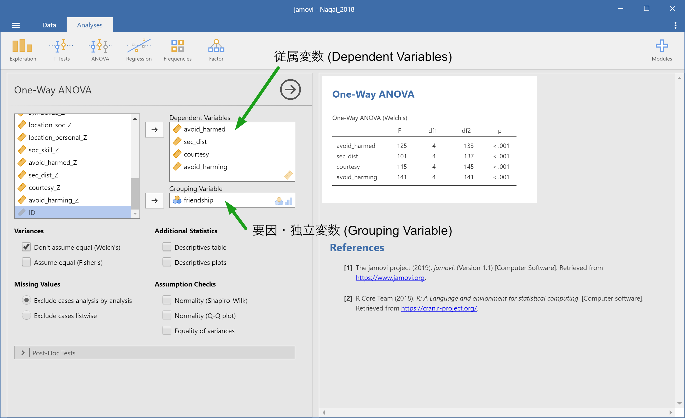
7.1.2 主効果の検定
独立・従属変数をそれぞれ指定すると，分析は自動で実行されます。初期状態では，群ごとの分散が等しくないという仮定をおいた分析 (Variances - Don’t assume equal (Welch’s)) が行われています。分散が等しいという仮定をおいた分析も行うようにしてみます。そのためには，Variances にある Assume equal (Fisher’s) というオプションにチェックを付けます。そうすると，右側の結果ウィンドウに，それぞれの検定の \(F\) 値（上段が Welch，下段が Fisher），自由度 (\(df1, df2\))，有意確率 \(p\) が表示されます。今回のデータの場合，いずれの従属変数についても，独立変数である付き合い方の主効果が有意であることがわかります。
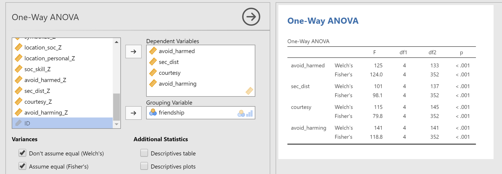
7.1.3 分散の等質性の検定
分散の等質性の前提が満たされているかどうかは，Assumption Checks の中の Equality of variances にチェックを付けると分かります。このオプションにチェックを付けると，分散の等質性に関するルビーンの検定 (Levene’s test) が行われます。今回のデータでは，等質性が保たれているのは距離確保のみで，それ以外の従属変数では等質性の仮定が満たされていないことがわかります。しかし，上の主効果の検定で示されたように，分散の等質性を仮定した場合でも，仮定しない場合でも検定結果は変わらないので，結論としては全ての従属変数について，付き合い方の主効果は有意であると言えます。
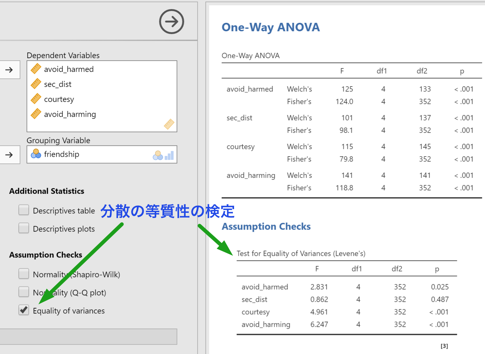
7.1.4 正規性の検定
従属変数が正規分布に従っているかどうかは，シャピロ−ウィルクの正規性の検定で確認します。正規性の検定は，Assumption Checks オプションにある Normality (Shapiro-Wilk) にチェックを付けてください。今回のデータでは，礼儀と傷つけ回避で正規性の仮定が満たされないことがわかります。分散分析は従属変数が正規分布に従うことを前提とするパラメトリック検定なので，正規性が満たされない場合は，ノンパラメトリック検定であるクラスカル・ウォリスの検定を行わなければなりません。クラスカル・ウォリスの検定については，後に説明します。
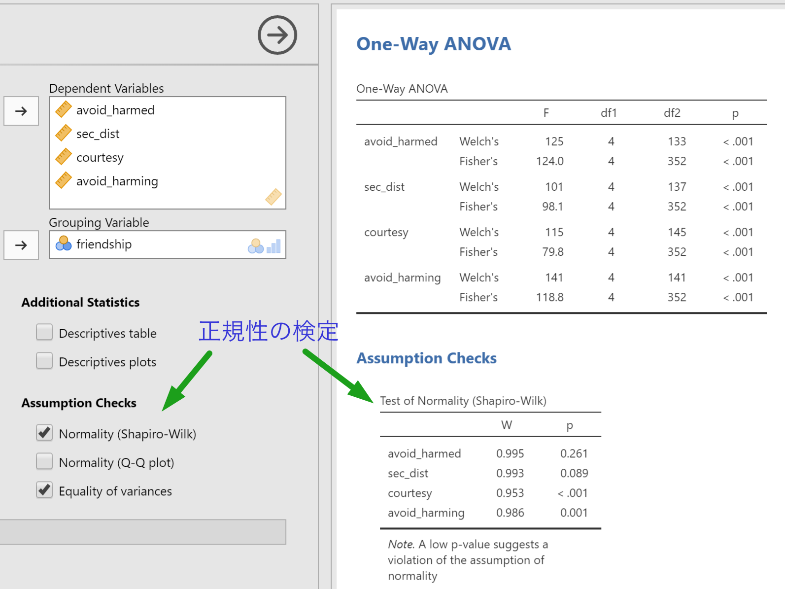
7.1.5 多重比較
3水準以上の要因で主効果が有意であったときは，事後検定 (Post-hoc test) として多重比較を行う必要があります。多重比較は，Post-Hoc Tests オプションを展開し，Tukey または Games-Howell のいずれかを選んで実行します。前者の Tukey は分散が等しい場合，後者の Games-Howell は分散が等しくない場合に使われる方法です。また，事後検定の表示オプション (Statistics) として，平均値の差 (Mean difference)，有意確率 (Report significance)，検定統計量 (t and df) などの統計量を選ぶことができるようになっていて，デフォルトでは，平均値差と有意確率が表示されます。下図は，Tukey 法による多重比較の結果を示しています。
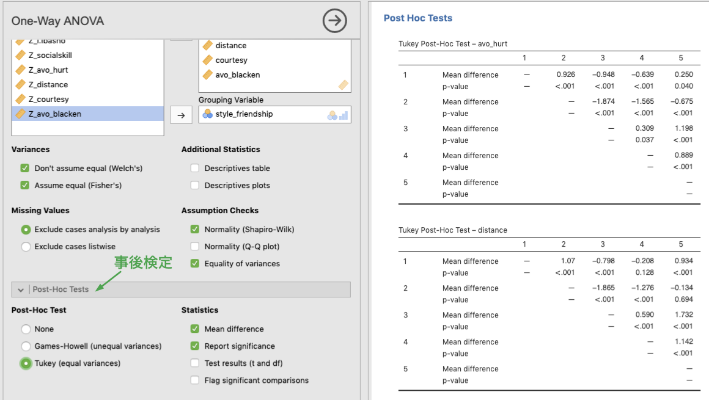
7.2 ２要因完全無作為計画の分散分析
では，次に，2要因以上の分散分析の方法について見ていきましょう。ここでは，先ほどと同じ永井 (2018) のデータを用いて，友人との付き合い方と性別を独立変数に，社会的居場所を従属変数とする分散分析を行ってみましょう。2要因以上の分散分析の場合は，ANOVA メニューの 2つ目にある ANOVA を選んで行います。
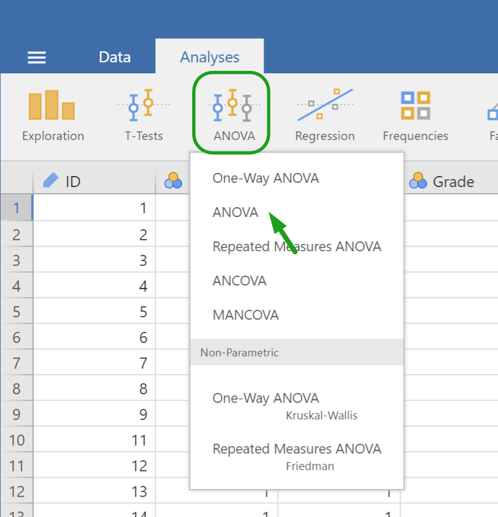
すでに，述べたように，この ANOVA では，One-way ANOVA とは異なり従属変数は1つしか指定できません。それでは，従属変数である社会的居場所を Dependent Variable のボックスに，独立変数である付き合い方，性別を Fixed factors のボックスに入れてみましょう。
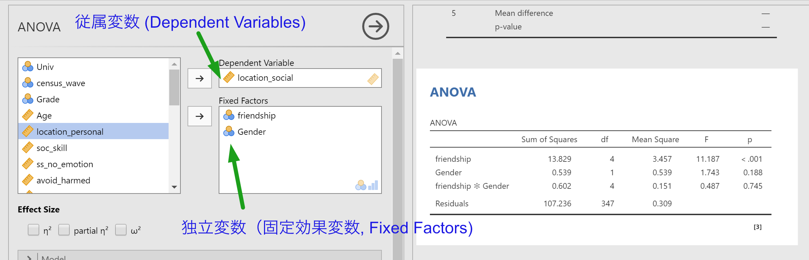
分散分析の結果は，即時に表示されます。結果を見て分かるとおり，友人との付き合い方の主効果は有意 [\(F(4, 347) = 11.2, p < .001\)] ですが，性別の主効果，付き合い方×性別の交互作用は有意ではありません [\(F(1, 347) = 1.74, p = .19; F(4, 345) < 1\)]。
ただし，このままの分散分析表では，効果量が算出されていません。必要に応じて，イータ2乗 (\(\eta^2\))，偏イータ2乗 (partial \(\eta^2\))，またはオメガ2乗 (\(\omega^2\)) にチェックを付けてください。表の右側に，選択した効果量が出力されます。
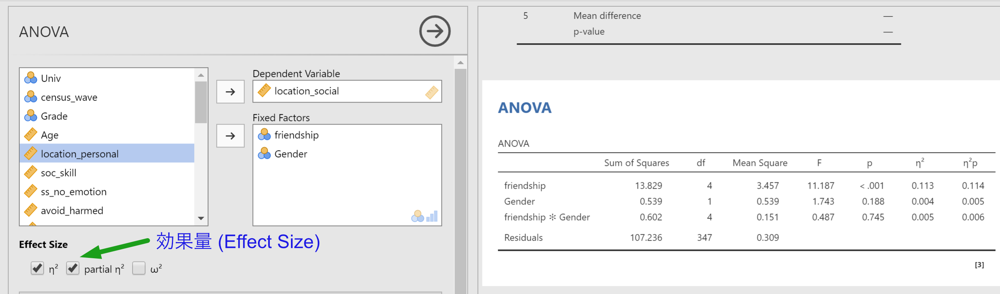
7.2.1 事後検定
1要因の時と同じように，友人との付き合い方の主効果が有意でしたので，多重比較を行いましょう。多重比較は，Post Hoc Tests オプションで選択します。事後検定を行いたい変数を左の変数一覧から右のボックスに入れ，多重比較の際の有意水準の調整方法を選択してください（下図では Holm の方法を用いています）。また，対比較の効果量 (Cohen’s d) を出力することもできます。
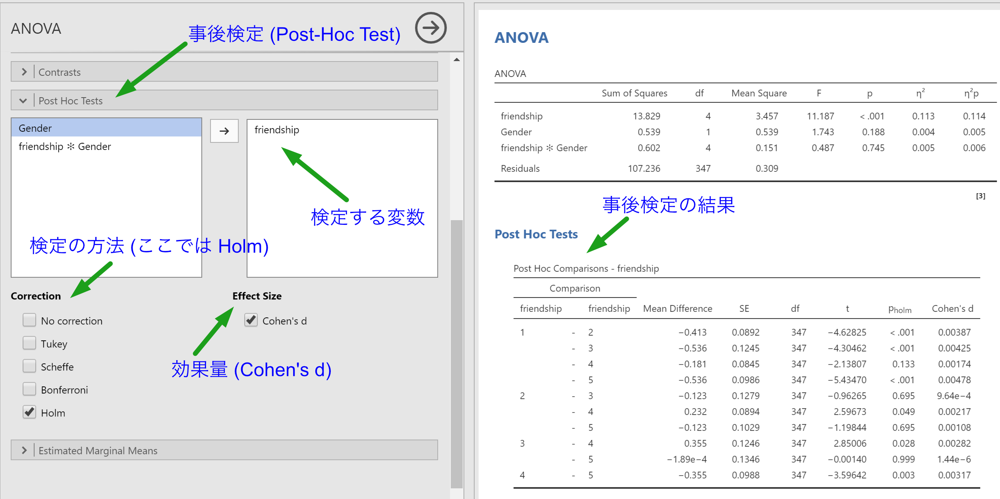
7.2.2 推定周辺平均
水準ごとの推定周辺平均 (Estimated Marginal Means) を求めたいときは，Estimated Marginal Means オプションを開き，推定周辺平均を求めたい変数を Marginal Means のボックスに入れます。まずは，水準間の差が見られた友人との付き合い方について推定周辺平均を求めてみましょう (下図)。
初期状態では，推定周辺平均のプロット (Marginal means plots; エラーバーは信頼区間) が表示されています。表が必要な場合は，Marginal means tables にチェックを付けてください。また，プロットのエラーバーは，無し (None)，信頼区間 (Confidence interval)，標準誤差 (Standard error) の中から選ぶことができます。
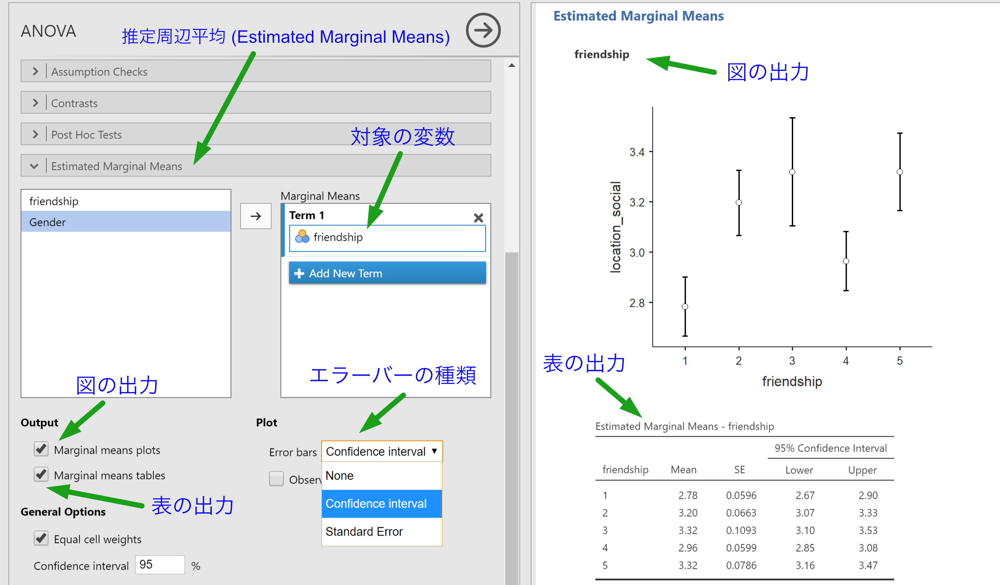
交互作用について，水準の組み合わせごとの推定周辺平均を算出したい場合は，2つの変数を同時に同じ Term の中に入れることで可能です。まずは，下図のように新しい Term を作成し (Add New Term)，付き合い方と性別を同時に，その Term の中に入れてみましょう。オプションの指定は上と同じです。
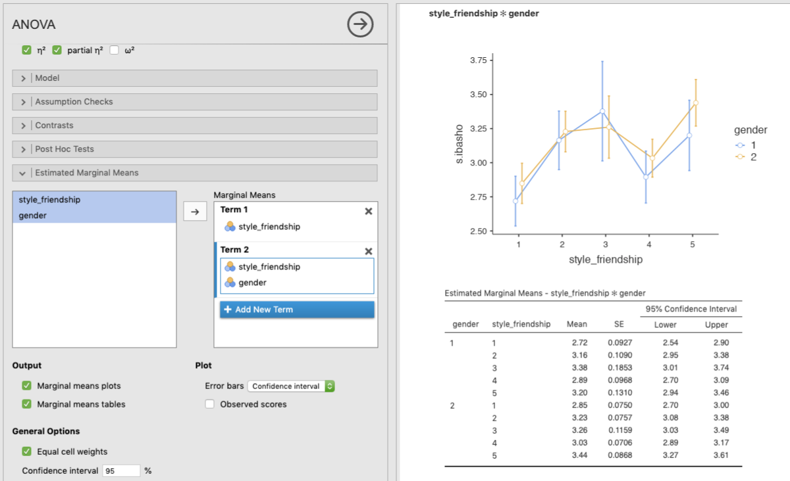
7.3 クラスカル・ウォリスの検定
分散分析は，従属変数が正規分布に従うことを前提としたパラメトリック検定です。そのため，正規分布しない従属変数に対して分散分析を行うのは，厳密に言えば問題があります。例えば先ほどの1要因完全無作為計画の分散分析では，礼儀と傷つけ回避では正規性の仮定が満たされていませんでした。このような場合に行われるノンパラメトリック検定として，jamovi にはクラスカル・ウォリス (Kruskal-Wallis) の検定が用意されています。それでは，友人との付き合い方 (friendship) を独立変数，従属変数を礼儀，傷つけ回避とするクラスカル・ウォリスの検定を行ってみましょう。
クラスカル・ウォリスの検定は，ANOVA メニューにある Non parametric / One-Way ANOVA – Kruskal-Wallis を選択します。
")
インターフェースは，1要因の分散分析 (One-Way ANOVA) と良く似ているので，同じように従属変数を Dependent Variables へ，独立変数を Grouping Variable へと入れます (下図)。礼儀と傷つけ回避の双方ともに，友人との付き合い方による差があることが見て取れる。
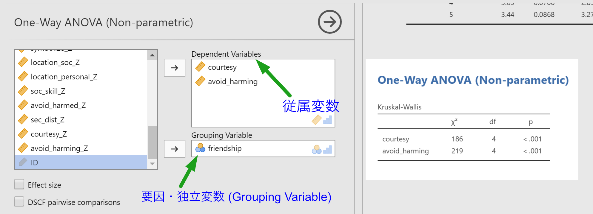
クラスカル・ウォリスの検定にはオプションとして，効果量 (\(\epsilon^2\)) を出力するかどうか，有意であった場合に水準間の対比較を行うかどうかの設定があります (下図)。効果量は，クラスカル・ウォリスの検定結果表の末尾に，対比較はその下に出力されるようになっています (Dwass-Steel-Critchlow-Fligner pairwise comparison)。
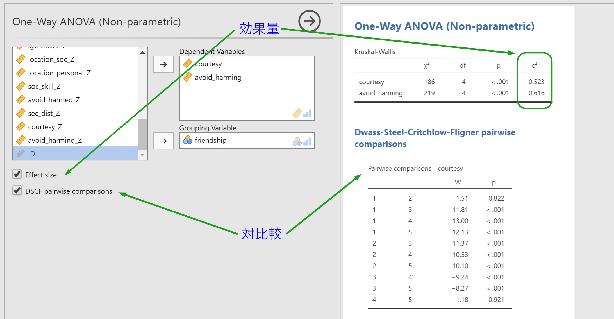
結果から，礼儀については 1-2, 4-5 の間に差は無く，それ以外の組み合わせの間には差があることが見て取れます。また，傷つけ回避については，1-5 の間に差が無く，それ以外の組み合わせの間には差があることがわかります。